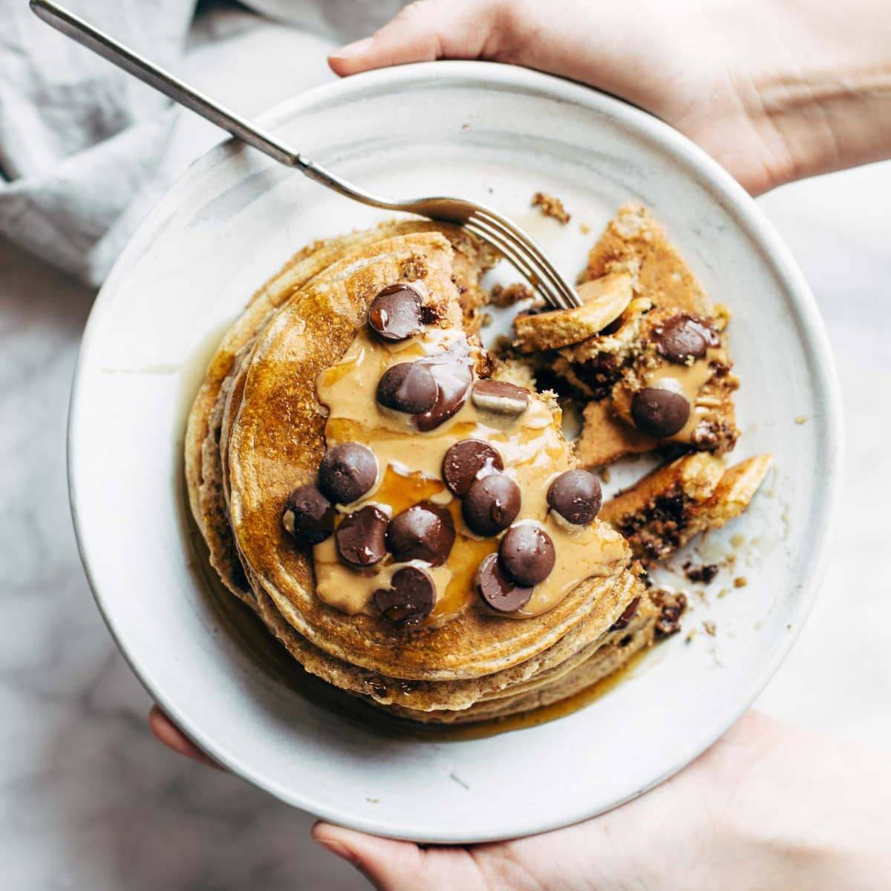

Protein Pancakes!

High Protein Pancakes with Protein Powder (37g of protein!)
Healthy high protein pancakes with protein powder, oats, banana, eggs, milk, and spices. Light and fluffy, easy to make, and packed with 37g of protein, complex carbs, and fiber for a well-balanced breakfast. Customize with your own toppings!
Ingredients
- Rolled Oats
- Protein Powder
- Banana
- Egg
- Milk
- Coconut Flour
- Cinnamon
- Baking Powder
- Salt
- Oil (For cooking)
Steps
- Blend your oats. Add rolled oats to your blender and blend for 10-15 seconds or so until it is broken down into a flour consistency.
- Combine your dry ingredients. Add processed oats, protein powder, coconut flour, baking powder, cinnamon, and salt in a small bowl and mix well to combine.
- Mix your wet ingredients. In a separate medium bowl, mash your bananas until smooth. Add your egg, and milk and mix well to combine. Add your dry ingredients to your wet and mix until combined. Try not to overmix. The batter should be pretty thick. Let the mixture sit for 5 minutes.
- Cook. Heat up a large nonstick skillet or griddle over low to medium heat. Once hot, add cooking fat and let it warm up. Using a 1/4 cup as a scoop, form into equal size pancakes. I get about 5 (you may need to cook in batches depending on how big your pan is). Cook for 3-4 minutes until bubbles start to form on the outside. Flip and cook for another 1-2 minutes until golden brown.
- Enjoy! Top with your favorite toppings and enjoy!